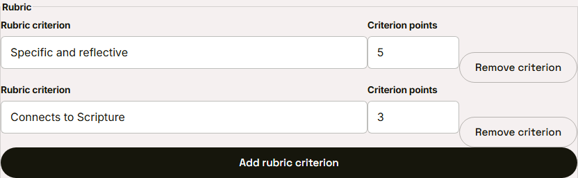
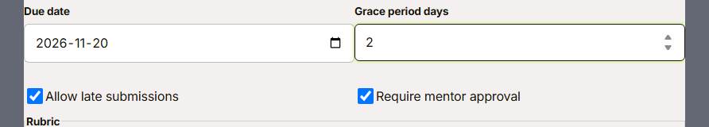
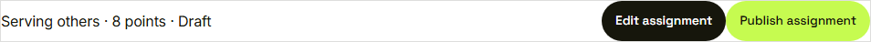

Waypoint · Video 044
Authoring assignments
Submission types, a rubric and due rules
A rubric with points

Each criterion carries a point value
Due date, grace period, late work

Due rules live in the same form
A draft with a total

Eight points, still a draft
Published and assigned
 Assignment published and assigned to enrolled youth
Assignment published and assigned to enrolled youth
Things to remember
- A title, a task and at least one submission type
- Every rubric criterion has points; Waypoint keeps the total
- Due date, grace period, late work, mentor approval
- A draft stays hidden until it is published